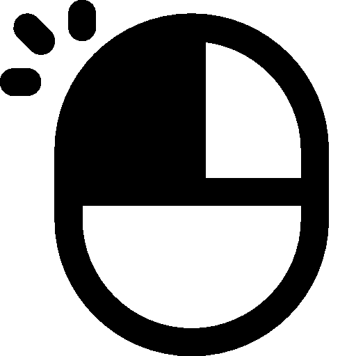

| Operation |
Action |

Double Click on a Node
|
Selects the node and highlights its edges and connecting nodes.
The color of the edges is same as that of the selected node and shows how data
flows from the selected node to other nodes.The selection is not cleared on mouseout.
|
Mouseover on a Node
|
- Highlights the node, its connections and connecting nodes.
The color of the edges is same as that of the selected node and shows how data
flows from the selected node to other nodes. The selection is cleared on mouseout.
- Enables a tooltip which shows statistics on the nodes as follows:
- Node Type - IT Resource (Storage - Units of storage in GB,
Compute - Units of computation in CPU Hours).
-
Node Type - Funding Type, shows number of unique grants from that Funding Resource.
-
Node Type - Publications, shows number of publications under that Discipline.
|
Mouseover on an Edge
|
- Highlights the edge and connected nodes, and corresponding edges from connected nodes.
The color of the edges is the same as the color of the nodes they start from and shows how data
flows across different nodes. The selection is cleared on mouseout.
- Enables a tooltip which shows how many records are in the data file
corresponding to the selected edge.
|